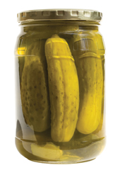

Module 4—Properties of Solutions
 Module Summary
Module Summary
Think back to the questions you were asked at the beginning of the module.
- What are some of your preconceived notions about solution chemistry?
- Have you acquired new knowledge from this module that contradicts prior beliefs?
As you worked through these lessons, you likely came across a few things that challenged your prior beliefs about solutions. Perhaps the following thoughts came to mind:
- Brass and air are solutions, even though you likely never thought they were.
- While the dissolving process of sugar and salt may appear to be visually identical, they dissolve in water for different reasons.
- Crystals of salt or sugar at the bottom of a saturated solution are not static.
- The improper disposal of computers can have an effect on people living as far north as the Arctic.
 Module Assessment
Module Assessment
The assessment in this module consists of the following:
- Lesson 1 Assignment
- Lesson 2 Assignment
- Lesson 3 Assignment
- Lesson 4 Assignment
- Lesson 5 Assignment
Proactive Citizen Projects: Topics
Part 1: The Water Supply and You
Project A
Complete the following activity and add your work to your course folder.
- Search your house and locate five potentially dangerous solutions. To find as many different types as possible, look in more places than underneath your kitchen sink. After you have decided on your five solutions, make a list of them and summarize all the important safety precautions for each solution.
- Select two products that have specific warnings on the label, such as warnings about mixing one product with another and storage temperature. Using the Internet or your library, research what would happen if these warnings were ignored. Do not try any experiments yourself.
- Select two solutions that are poisonous. Research what would happen if these particular solutions were ingested. What should be done if someone accidentally swallows these solutions?
- Some of the solutions in your list may be dangerous to the environment. Research how to safely dispose of each of your five solutions.
Project B
Untreated water can lead to a variety of health problems. Fortunately, water treatment plants exist to make sure the water reaching your home meets strict government standards. Despite the efforts of municipalities to provide clean and safe drinking water, many people believe that tap water is still unsafe and they choose to drink bottled water. Write an essay that answers the following question:
Many people believe that bottled water is safer than tap water. Do scientific facts justify this belief?
You may use the Internet or your library to research this issue. To begin your research you may want to use relevant terms in a variety of combinations. Also, you may wish to consult your class and review the discussion postings from other students to find ideas for your essay.
Part 2: Who’s Looking Out for Your Safety?
Project C
Toxicologists study adverse effects of chemicals on living organisms. Write an essay or create an illustration, slide presentation, podcast, or mindmap describing the discipline of toxicology. You may wish to incorporate some of the following ideas into your paper. Feel free to come up with your own ideas too.
- What are some examples of topics a toxicologist would study?
- Which industries hire toxicologists?
- What laboratory techniques do toxicologists use?
- What kind of education is required to become a toxicologist? What are some of the different specializations?
Project D
Salt can be a problem in terrestrial ecosystems. Road salt used throughout the winter to melt ice can increase the salinity of freshwater reserves close to areas where it is used, impacting plants and animals.
What are the benefits and hazards of road salt?
Write an essay or create an illustration, slide presentation, or mindmap that addresses this question from many perspectives and situations.
Part 3: When Is Salty Water Not Safe to Consume?
Project E

© EuToch/shutterstock
Water softeners use an ion-exchange resin that removes calcium and magnesium from hard water. However, this process releases sodium ions during the process.
Despite the increased salinity of soft water, the amount of sodium released from a water softener is tiny compared to the amount of salt people consume in food. Therefore, it does not pose a significant health risk, even to those on salt-reduced diets.
At what point would salty water become dangerous if consumed? Why can salt water be dangerous to consume, even if its concentration is similar to that of our blood?
Write text or create an illustration, cartoon, slide presentation, podcast, or mindmap to provide an explanation to these questions. In order to be convincing, you must include scientific principles that back up your statements. Save your work to your course folder.
Part 4: Understanding Guidelines for Canadian Drinking Water
Project F
In this project you will create a pamphlet, comic strip, or slide presentation that summarizes important details about drinking water in your area. Some of the topics you may wish to discuss are
- the source of the water supply (surface water or groundwater; location)
- the water treatment plant that services your area
- environmental concerns about your local water
- links to local websites that discuss your drinking water (e.g., municipal government websites)
- consumer information (e.g., water rates)
Project G
Most water treatment plants give tours of their operations. Arrange a tour of your local water treatment plant and write a report that describes how your water is treated.
Part 5: Household Environmental Hazards
Project H
Batteries and computer equipment often contain heavy metals, such as mercury and cadmium. These metals can be released into environmental water systems if the equipment is disposed of improperly.
Research the ecological impact of heavy metals in the food chain. Design a poster, slide presentation, or diagram that explains the dangers of simply disposing of these items in the trash.
Project I
Pesticides can have tremendous value in the lawn and garden, but they do have environmental risks associated with them. Research the risks associated with pesticide use, and investigate possible alternatives. Imagine you are responsible for marketing a pesticide alternative for gardeners. Write a sales pitch and then create an ad or podcast that would convey the environmental need to switch products as well as make consumers feel it is a better choice for their backyards.
Proactive Citizen Projects: Scoring Guide
The projects listed above have different aspects and requirements. Therefore your teacher may decide to use one or more of the following scoring criteria to grade your project. Consult with your teacher to find out which criteria will be used to judge your work.
Although only criteria for grades of 4 and 2 out of 4 are shown, it will be possible for you to obtain grades of 3, 1, and 0 if your work falls below the criteria described.
Standard of Excellence and Acceptable Standard for Knowledge
Score |
Scoring Description |
|---|---|
4
Excellent |
The response is well organized and addresses all the major points of the question using appropriate and clear communication strategies. The description of relevant scientific, technological, and/or societal concepts is explicit. Descriptions, explanations, and/or interrelationships between the concepts provided are correct and reflect a thorough understanding of the question. |
2
Acceptable |
The response is generally organized and addresses most of the major points of the question using adequate communication strategies. The description of relevant scientific, technological, and/or societal concepts is mentioned. Descriptions between the concepts provided are generally correct and reflect an adequate understanding of the question. |
Standard of Excellence and Acceptable Standard for Skills
Score |
Scoring Description |
|---|---|
4
Excellent |
The problem is thoroughly understood. Research results in a comprehensive and thorough set of information from many sources and perspectives. The data are accurately and completely analyzed. Accurate interpretations and conclusions are made based on an analysis of the data. |
2
Acceptable |
The problem is understood. Research results in a reasonable set of information representing a range of sources. The data are adequately analyzed. Interpretations and conclusions are generally based on an analysis of the data. |
Standard of Excellence and Acceptable Standard for STS
Score |
Scoring Description |
|---|---|
4
Excellent |
The interrelationships between science, technology, and society are thoroughly understood. Risks and benefits are thoroughly evaluated. Insightful and convincing arguments are used to support a decision or judgement, and a range of viewpoints is considered. |
2
Acceptable |
The interrelationships between science, technology, and society are generally understood. Risks and benefits are listed. Logical arguments are used to support a decision or judgement, and viewpoints are considered. |